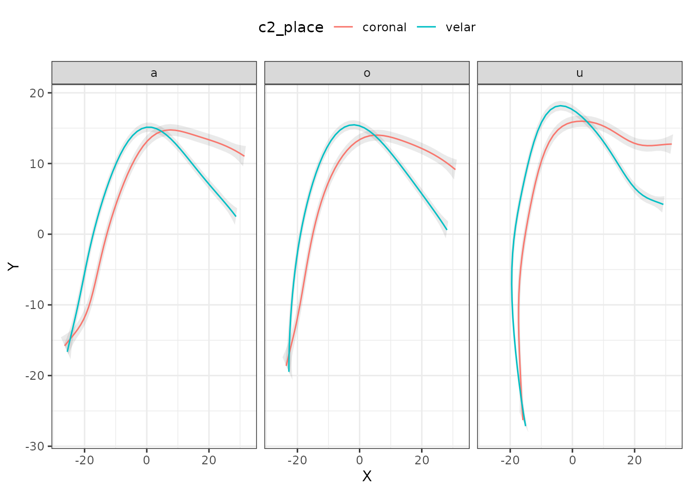

Using generalised additive models (GAM) with polar coordinates for assessing tongue contours
Stefano Coretta
2025-02-20
Source:vignettes/polar-gams.Rmd
polar-gams.RmdRead data
The package rticulate comes with a dataset containing
spline data from two speakers of Italian.
library(rticulate)
data(tongue)
tongue
#> # A tibble: 3,612 × 28
#> speaker seconds rec_date prompt label TT_displacement TT_velocity
#> <fct> <dbl> <fct> <fct> <fct> <dbl> <dbl>
#> 1 it01 1.31 29/11/2016 15:10:57 Dico p… max_… 67.1 36.6
#> 2 it01 1.20 29/11/2016 15:11:03 Dico p… max_… 77.9 -7.73
#> 3 it01 1.08 29/11/2016 15:11:25 Dico p… max_… 65.9 21.1
#> 4 it01 1.12 29/11/2016 15:11:35 Dico p… max_… 64.4 8.76
#> 5 it01 1.42 29/11/2016 15:11:57 Dico p… max_… 76.9 -4.72
#> 6 it01 1.35 29/11/2016 15:12:53 Dico p… max_… 78.1 -5.68
#> 7 it01 1.07 29/11/2016 15:13:44 Dico p… max_… 69.9 -40.0
#> 8 it01 1.17 29/11/2016 15:13:49 Dico p… max_… 78.0 -7.31
#> 9 it01 1.28 29/11/2016 15:14:11 Dico p… max_… 67.1 34.5
#> 10 it01 1.10 29/11/2016 15:14:22 Dico p… max_… 75.9 -23.5
#> # ℹ 3,602 more rows
#> # ℹ 21 more variables: TT_abs_velocity <dbl>, TD_displacement <dbl>,
#> # TD_velocity <dbl>, TD_abs_velocity <dbl>, TR_displacement <dbl>,
#> # TR_velocity <dbl>, TR_abs_velocity <dbl>, fan_line <int>, X <dbl>, Y <dbl>,
#> # word <fct>, item <dbl>, ipa <fct>, c1 <fct>, c1_phonation <fct>,
#> # vowel <fct>, anteropost <fct>, height <fct>, c2 <fct>, c2_phonation <fct>,
#> # c2_place <fct>Fit a polar GAM
The spline data is in cartesian coordinates. The function
polar_gam() converts the coordinates to polar and fits a
GAM to the data. Note that, unless you have a working method to
normalise between speakers, it is recommended to fit separate models for
each speaker.
The polar coordinates are calculated based on the origin of the
probe, which is estimated if origin = NULL using the fan
lines specified with the argument fan_lines (the defaults
are c(10, 25)).
If you get an error relating to lm.fit, try to change
the fan_lines to values different from the default.
tongue_it05 <- filter(tongue, speaker == "it05", vowel == "a", fan_line < 38) %>% droplevels()
polar_place <- polar_gam(
Y ~
s(X, by = c2_place),
data = tongue_it05
)
#> The origin is x = 11.028937677505, y = -53.2813982686628.
summary(polar_place)
#>
#> Family: gaussian
#> Link function: identity
#>
#> Formula:
#> Y ~ s(X, by = c2_place)
#>
#> Parametric coefficients:
#> Estimate Std. Error t value Pr(>|t|)
#> (Intercept) 62.75772 0.08464 741.5 <2e-16 ***
#> ---
#> Signif. codes: 0 '***' 0.001 '**' 0.01 '*' 0.05 '.' 0.1 ' ' 1
#>
#> Approximate significance of smooth terms:
#> edf Ref.df F p-value
#> s(X):c2_placecoronal 4.576 5.614 142.7 <2e-16 ***
#> s(X):c2_placevelar 7.993 8.732 372.2 <2e-16 ***
#> ---
#> Signif. codes: 0 '***' 0.001 '**' 0.01 '*' 0.05 '.' 0.1 ' ' 1
#>
#> R-sq.(adj) = 0.934 Deviance explained = 93.6%
#> fREML = 534.93 Scale est. = 2.0697 n = 289The output model is in polar coordinates but it contains the origin coordinates so that plotting can be done in cartesian coordinates.
Multiple predictors
It is possible to specify multiple predictors in the model and then facet the plots.
tongue_it05 <- filter(tongue, speaker == "it05", fan_line < 38) %>% droplevels()
polar_multi <- polar_gam(
Y ~
s(X, by = c2_place) +
s(X, by = vowel),
data = tongue_it05
)
#> The origin is x = 11.0276270964655, y = -53.2776157001125.
summary(polar_multi)
#>
#> Family: gaussian
#> Link function: identity
#>
#> Formula:
#> Y ~ s(X, by = c2_place) + s(X, by = vowel)
#>
#> Parametric coefficients:
#> Estimate Std. Error t value Pr(>|t|)
#> (Intercept) 61.9700 0.0768 806.9 <2e-16 ***
#> ---
#> Signif. codes: 0 '***' 0.001 '**' 0.01 '*' 0.05 '.' 0.1 ' ' 1
#>
#> Approximate significance of smooth terms:
#> edf Ref.df F p-value
#> s(X):c2_placecoronal 5.583 6.597 3.827 0.000724 ***
#> s(X):c2_placevelar 6.925 7.784 8.564 < 2e-16 ***
#> s(X):vowela 3.825 4.746 2.219 0.042102 *
#> s(X):vowelo 2.573 3.003 2.176 0.086926 .
#> s(X):vowelu 6.835 7.774 10.861 < 2e-16 ***
#> ---
#> Signif. codes: 0 '***' 0.001 '**' 0.01 '*' 0.05 '.' 0.1 ' ' 1
#>
#> Rank: 45/46
#> R-sq.(adj) = 0.915 Deviance explained = 91.8%
#> fREML = 1986.9 Scale est. = 5.1237 n = 872Extract all predicted values
If your model includes other smooths, or you want to have more
control over the plotting, you can use the function
predict_polar_gam(). This function is based on
tidymv::predict_gam(), and I suggest the reader to
familiarise themselves with
vignette("predict-gam", package = "tidymv").
For example, let’s add a smooth to the model we used above and an
interaction of this smooth with the one over X. For
illustrative purposes, we will set up a smooth over
TR_abs_velocity, which is the absolute velocity of the
tongue root at the time point the tongue contour was extracted (note
that this analysis might not make sense, and it is given here only to
show how to extract the predictions). We also include a random smooth
for word, which we will exclude later when we extract the
predictions.
polar_2 <- polar_gam(
Y ~
s(X) +
s(X, by = c2_place) +
s(TR_abs_velocity, k = 6) +
ti(X, TR_abs_velocity, k = c(9, 6)) +
s(X, word, bs = "fs"),
data = tongue_it05
)
#> The origin is x = 11.0276270964655, y = -53.2776157001125.
summary(polar_2)
#>
#> Family: gaussian
#> Link function: identity
#>
#> Formula:
#> Y ~ s(X) + s(X, by = c2_place) + s(TR_abs_velocity, k = 6) +
#> ti(X, TR_abs_velocity, k = c(9, 6)) + s(X, word, bs = "fs")
#>
#> Parametric coefficients:
#> Estimate Std. Error t value Pr(>|t|)
#> (Intercept) 61.6338 0.5287 116.6 <2e-16 ***
#> ---
#> Signif. codes: 0 '***' 0.001 '**' 0.01 '*' 0.05 '.' 0.1 ' ' 1
#>
#> Approximate significance of smooth terms:
#> edf Ref.df F p-value
#> s(X) 7.2007 7.672 5.111 5.18e-06 ***
#> s(X):c2_placecoronal 1.0000 1.000 2.009 0.156712
#> s(X):c2_placevelar 0.9186 1.069 0.275 0.721573
#> s(TR_abs_velocity) 3.8178 4.436 4.833 0.000333 ***
#> ti(X,TR_abs_velocity) 23.0822 28.164 5.503 < 2e-16 ***
#> s(X,word) 35.5012 57.000 27.256 < 2e-16 ***
#> ---
#> Signif. codes: 0 '***' 0.001 '**' 0.01 '*' 0.05 '.' 0.1 ' ' 1
#>
#> Rank: 132/133
#> R-sq.(adj) = 0.96 Deviance explained = 96.3%
#> fREML = 1739.7 Scale est. = 2.4364 n = 872We can now obtain the predicted tongue contours. We set specific
values for TR_abs_velocity using the values
argument. Since we included a random smooth, which we want to remove
now, we can do so by using exclude_terms. To learn how this
argument works in detail, see
vignette("predict-gam", package = "tidymv"). Note that you
have to filter the output to remove repeated data (which arise because
we are excluding a term, i.e. we set its coefficient to 0).
polar_pred <- predict_polar_gam(
polar_2,
values = list(TR_abs_velocity = seq(2, 24, 5)),
exclude_terms = "s(X,word)"
) %>%
filter(word == "paca") # filter data by choosing any value for word
polar_pred
#> # A tibble: 500 × 6
#> c2_place TR_abs_velocity word se.fit X Y
#> <fct> <dbl> <fct> <dbl> <dbl> <dbl>
#> 1 coronal 2 paca 2.78 31.0 9.75
#> 2 coronal 2 paca 2.53 29.6 10.0
#> 3 coronal 2 paca 2.30 28.1 10.3
#> 4 coronal 2 paca 2.10 26.7 10.5
#> 5 coronal 2 paca 1.92 25.2 10.8
#> 6 coronal 2 paca 1.76 23.8 11.0
#> 7 coronal 2 paca 1.62 22.3 11.3
#> 8 coronal 2 paca 1.49 20.9 11.5
#> 9 coronal 2 paca 1.39 19.5 11.8
#> 10 coronal 2 paca 1.32 18.0 12.1
#> # ℹ 490 more rowsAnd now we can plot using standard ggplot2
functions.
polar_pred %>%
ggplot(aes(X, Y, colour = as.factor(TR_abs_velocity), linetype = as.factor(TR_abs_velocity))) +
geom_path() +
facet_grid(c2_place ~ .)Plotting the curve with confidence intervals
If you want to add confidence intervals to the fitted curve, you have
to get both the coordinates of the fitted curves using
predict_polar_gam(model) and the coordinates of the
confidence intervals with
predict_polar_gam(model, return_ci = TRUE).
polar_multi_p <- predict_polar_gam(
polar_multi
)
ci_data <- predict_polar_gam(
polar_multi,
return_ci = TRUE,
)Now you can use the prediction dataset as the global data and the CI
data with geom_polygon().
polar_multi_p %>%
ggplot(aes(X, Y)) +
geom_polygon(data = ci_data, aes(CI_X, CI_Y, group = c2_place), alpha = 0.1) +
geom_path(aes(colour = c2_place)) +
facet_grid(. ~ vowel) +
theme(legend.position = "top")